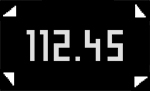

| 3/6 | Si votre corps n'est pas correctement positionné pour une mesure haute-précision, de petites flèches apparaîtront à l'écran de la balance pendant la pesée.  Pour les faire disparaître et permettre l'enregistrement de la mesure, équilibrez convenablement votre poids sur la surface de la balance.
|